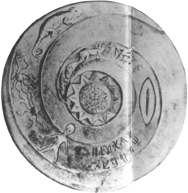

|  |
En 1978 paraît un livre RobinEvans, Karyl: Sungods in Exile: Secret Gods of the Dzopa..., Sphere 1978. Réédité à Londres, 1980 relatant l'histoire des Dropas, la photographie d'une assiette agrémentée de dessins de figures semblables à une "soucoupe volante" et à un humanoïde à large tête fréquemment rencontrés dans les témoignages.
En fait, le livre a été écrit par David A. Gamon, qui admet Fortean Times, 62: 63, 1992 que le tout est un un canular : le personnage de Robin-Evans comme son récit des Dropas, créé comme une satire de l'industrie de "dieu était un extraterrestre". Il dit avoir remis à un ami un croquis de l'assiette pour que ce dernier en fasse une peinture réaliste en noir et blanc, photographiée de manière à ce que l'on puisse croire à une véritable assiette Patrick Gross.
Cela n'empêchera pas de retrouver cette assiette mentionnée, notamment par Robert Dean, comme découverte au Népal, et datant, selon les sources, de 4000 ou 7000 ans. On la décrit comme conservée dans un musée de Berlin Dossiers OVNI, n° 1, p. 303 Facteur X, n ° 12, p. 321.